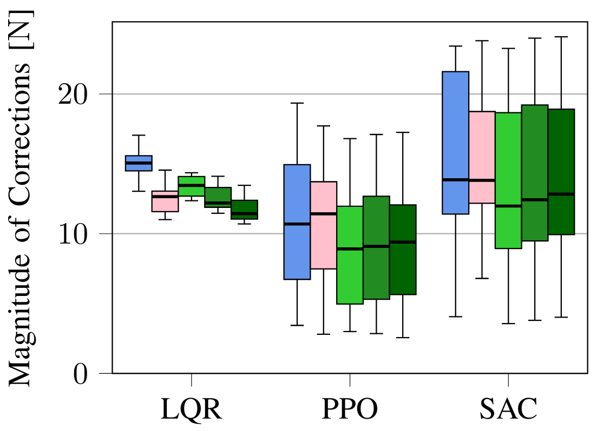
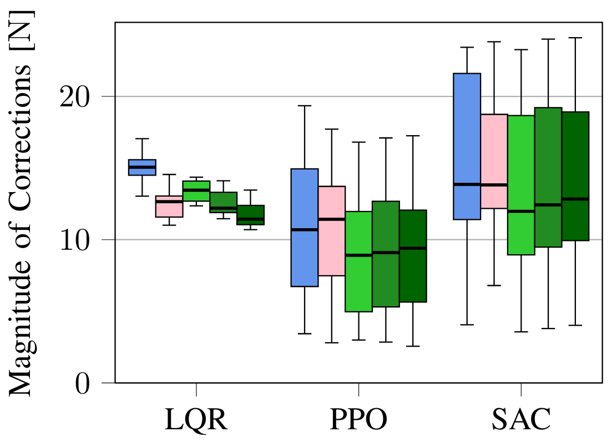

I - Multi-Step Safety Filters
Fig. 1: Chattering caused by the standard one-step MPSF versus the multi-step MPSF. The multi-step filter reduces the peak-to-peak amplitude of chattering from 16.3cm to 3.6cm.
The standard (one-step) safety filter objective function is:
$J_{\text{SF},1} = \|\pi_{\text{uncert}}(\textbf{x}_k) - \textbf{u}_{0|k}\|^2,$
where $\textbf{x}_k$ is the state at time step $k$, $\pi_{\text{uncert}}$ is the RL policy, and $\textbf{u}_{0|k}$ is the input to be applied (the optimization variable). By only minimizing corrections in the next time step, the safety filter corrects actions at the last possible moment, causing chattering and jerky movement. By generalizing to multiple steps, the filter can minimize corrections over a longer prediction horizon:
$J_{\text{SF},M} = \sum_{j=0}^{M-1} w(j)\| \pi_{\text{uncert}}(\textbf{z}_{j|k}) - \textbf{u}_{j|k} \|^2,$
where $w(\cdot) : \mathbb{N}_{0} \to \mathbb{R}^+$ calculates the weights associated with the $j\text{-th}$ correction, $M$ is the filtering horizon, $\textbf{z}_{j|k}$ is the estimated future state at the $(k + j)$-th time step computed at time step $k$, and $\textbf{u}_{j|k}$ is the input at the $(k + j)$-th time step computed at time step $k$. The inputs are the optimization variables. This allows the agent to proactively correct actions to avoid unsafe states.
Contributions: We propose generalizing the standard safety filter objective function to reduce chattering and other potentially unsafe corrective actions. We apply this approach to model predictive safety filters (MPSFs). We prove our approach inherits the theoretical recursive feasibility guarantees of the underlying MPC.
II - RL Training with Safety Filters
Fig. 2: An RL controller trained without a safety filter (blue) tracks a reference trajectory (black), but unforeseen interactions with the safety filter cause poor tracking. When trained with a safety filter (green), the behaviour is smoother and more performant. The constraints are in red.
Contributions: In this paper, we analyze three modifications to the training process of any RL controller through the incorporation of a safety filter. These modifications can be combined or used separately and can be applied to any RL controller and safety filter. We found that the modifications significantly improve sample efficiency, eliminate constraint violations during training, improve final performance, and reduce chattering on the certified system.
Filtering Training Actions
During training, the controller generates uncertified actions $\textbf{u}_{\text{uncert}, k} \in \mathbb{U}$. By applying the safety filter $\textbf{u}_{\text{cert}, k} = \pi_{\text{SF}}(\textbf{x}_{k}, \textbf{u}_{\text{uncert}, k})$, safety is guaranteed during training and the controller trains on the certified system on which it will be evaluated.
Penalizing Corrections
We can penalize corrections during training to encourage the RL to execute safe actions. The magnitude of the correction measures how unsafe the action was. Thus, we penalize the reward by $\alpha \|\textbf{u}_{\text{uncert}, k} - \textbf{u}_{\text{cert}, k} \|_2^2$, where $\alpha > 0$ is a tuneable weight.
Safely Resetting the Environment
Sample efficiency can be improved by using the safety filter to avoid initiating an episode in an unsafe state. We will sample $\textbf{x}_0 \sim \mathbb{S}$, where $\mathbb{S}$ is the set of starting states, and then determine the feasibility of certifying an input from that state. If the safety filtering optimization is feasible, $\textbf{x}_0$ is safe. If infeasible, another starting state is randomly generated until a feasible starting state is found.
Results I - Multi-Step Safety Filters
To determine the efficacy of the proposed multi-step MPSF, we ran experiments on a simulated cartpole in the safe learning-based control simulation environment $\texttt{safe-control-gym}$ and on a real quadrotor, the Crazyflie 2.0. The underlying MPC is a robust nonlinear MPC formulation. The experiments test the standard one-step MPSF compared to our proposed multi-step MPSF with $M=2, 5, 10$. Additionally, we consider the one-step MPSF with regularization $J_{\text{reg}}$.
Simulation Experiments
 

Fig. 3: Results for simulated experiments on a cartpole testing the multi-step approach.
Real Hardware Experiments


Fig. 4: Results for real hardware experiments on a Crazyflie 2.0 quadrotor testing the multi-step approach.
Results II - Training with Safety Filters
The controllers were evaluated on a simulation of a Crazyflie 2.0 using the $\texttt{safe-control-gym}$ and a real Crazyflie 2.0. The trajectory tracking task consists of tracking a figure-eight reference in three dimensions. The position is constrained to be 5% smaller than the full extent of the trajectory.
Simulation Experiments

Fig. 5: Results for simulated experiments on a Crazyflie 2.0 quadrotor testing the various training modifications.

Fig. 6: Results for simulated experiments on a Crazyflie 2.0 quadrotor testing the effects of the correction penalty weight $\alpha$ and the constraint violation penalty $\beta$.
Real Hardware Experiments

Fig. 7: Results for real hardware experiments on a Crazyflie 2.0 quadrotor testing the combined training modifications.